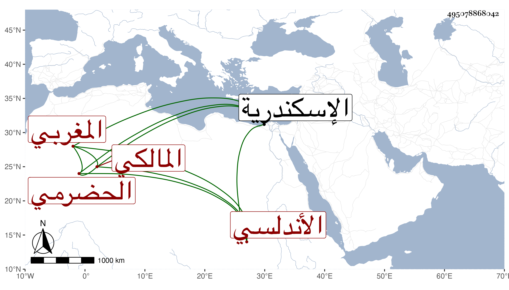

0902Sakhawi.DawLamic.ITO20230111-ara1.EIS1600.495078868042
Biography ID: 495078868042
إبراهيم بن سعد بن إبراهيم بن محمد أبو المكارم بن أبي الحسن الحضرمي الأندلسي المغربي المالكي ويعرف بالحربي وبابن الصباغ شاب يكثر الاجتماع بالسنباطي ويقرأ عليه ويأخذ منه أجزاء يقرؤها على حفيد الشيخ يوسف العجمي وغيره وتوسع لاناس ليسوا في عداد الرواية بالنسبة لهذا الزمان بحيث أحضر لي استدعاءا عليه خطوط من لم أعرفه فأبيت الكتابة عليه وسألني في مسألة من الاصطلاح فقررتها له وهو ممن يقرأ في العربية على السنهوري ونظام ويشارك جماعة عند الديمي في شرح الألفية الحديثية ثم إنه لازمني وقرأ علي أشياء وحصل شرحي للألفية وغيره وقرأ فيه جزءا على التقسيم ورأيته فهما ذكيا ذا أنسة بالطلبة وميل إلى التحصيل وأقبل بكليته على التردد إلي وقال الآن علمنا أنا لم نحصل شيئا ولما مات أبوه وكان تاجرا متمولا تعب ودخل الاسكندرية مجدا ولم يحصل على طائل بل مات سريعا في أول سنة ثلاث وتسعين وتفرقت التركة ولم يفده امساكه وحرصه كأبيه رحمهما الله وإيانا .
